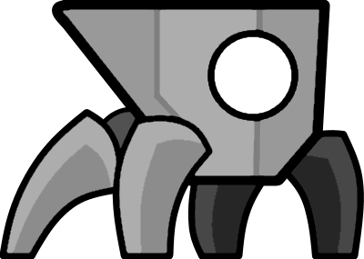

Geometry Dash — компьютерная игра в жанре 2D-платформера, выпущенная изначально для мобильных устройств на iOS/Android, позже и для настольных компьютеров. Создатель игры — шведский разработчик Роберт Топала, выступающий под псевдонимом RobTop.
Игровой процесс заключается в прохождении уровня со множеством препятствий под ритмичную музыку. Помимо встроенных, игроки могут создавать свои уровни и выкладывать их для прохождения другими игроками. Вокруг игры сложилось активное сообщество фанатовКак такового сюжета в игре нет.
Игра содержит 21 встроенный уровень, 18 из которых открыты для прохождения сразу, ещё три открываются после сбора на других уровнях определённого количества секретных монет. Уровни представляют собой полосы препятствий, по которым движется персонаж игрока, принимающий одну из нескольких форм, каждая из которых движется по-своему, и длятся в среднем полторы-три минуты. Полоса препятствий синхронизирована с саундтреком уровня, в качестве которого выступают электронные музыкальные треки таких композиторов, как Waterflame, DJ-Nate и других[5]. Управление производится нажатием одной кнопки (либо нажатием по сенсорному экрану).
Столкнувшись с препятствием, игрок начинает прохождение с начала уровня, запасных жизней нет. Существует режим практики, в котором можно ставить точки сохранения посреди уровня и при смерти продолжать прохождение с них; награды за такое прохождение не выдаются.Персонаж игрока может принимать следующие формы:| Изображения | Название | Описание | |
|---|---|---|---|
| 1 | Куб | Движется вперёд по плоской поверхности, падает в ямы, при нажатии подпрыгивает. | |
| 2 | Корабль | Летит по воздуху, при зажимании набирает высоту, иначе начинает падать. | |
| 3 | Шар | Катится по поверхности, при нажатии меняет свою гравитацию на противоположную. | |
| 4 | Робот | Движется как куб, но при долгом зажатии подпрыгивает выше и дальше. | |
| 5 | Волна | Движется зигзагом, при зажимании — по диагонали вверх, при отпускании — по диагонали вниз. | |
| 6 | НЛО | Летит по воздуху, при нажатии подпрыгивает в воздухе. | |
| 7 |  | Паук | Движется как шар, но при нажатии не падает, а мгновенно перемещается на противоположную поверхность. |
Меняющие форму персонажа Меняющие скорость движения персонажа Пара порталов, телепортирующих персонажа из входного в выходной Меняющий гравитацию на направленную вверх Отражающий изображение на экране справа налево Уменьшающий размер персонажа вдвое (с уменьшением размера прыжков)
Создающий копию персонажа, на которую действует противоположно направленная гравитация. После этого игрок управляет обоими персонажами одновременно. Для четырёх последних порталов есть также порталы, отменяющие их действие.
Игрок получает внутриигровые награды нескольких типов (звёзды, сферы, алмазы, монеты, осколки и ключи) за прохождение встроенных и пользовательских уровней и наборов уровней, и периодически — просто за вход в игру.
За сбор определённого количества наград игрок получает или может покупать во внутриигровом магазине новый внешний вид персонажей и другие визуальные эффекты. Возможности покупать что-либо за реальные деньги нет.
В игре с первой же версии существует редактор уровней, в котором можно построить свой уровень и выложить его для прохождения другими игроками. Изначально в пользовательских уровнях можно было использовать только музыку из официальных уровней, спустя примерно год после выхода игры добавилась возможность использовать свободную музыку с сайта Newgrounds.
Пользовательские уровни могут быть оценены модераторами игры как «избранные» или «эпические», за их прохождение выдаются награды. Перед публикацией уровень должен быть верифицирован, то есть пройден (для доказательства того, что его в принципе можно пройти), верификация сложнейших уровней лучшими игроками может занимать несколько месяцев.
После появления возможности использовать музыку с Newgrounds многие игроки стали загружать на этот сайт не свою музыку для использования её в своих уровнях, нарушая авторские права её создателей; на модераторов Newgrounds легла большая нагрузка по поиску и удалению таких треков.
Кроме того, многие игроки стали требовать от популярных композиторов разрешить использовать всю их музыку в игре, из-за чего некоторые композиторы отказались продолжать сотрудничество с Newgrounds, пока музыка оттуда доступна в игре. В январе 2017 года, после подачи петиции на сайте change.org и множественных жалоб композиторов в Steam, игра была удалена из AppStore, Google Play и Steam.
Через несколько дней было достигнуто соглашение: в игре стало можно использовать только музыку композиторов, явным образом согласившихся на это и внесённых в «белый список» создателем игры; после этого игра вернулась в магазины.